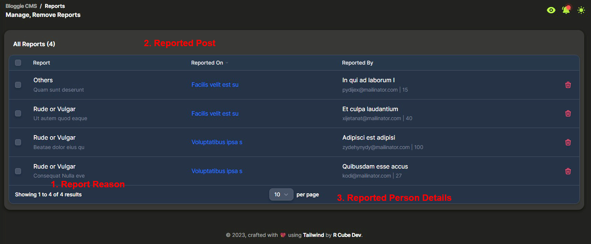
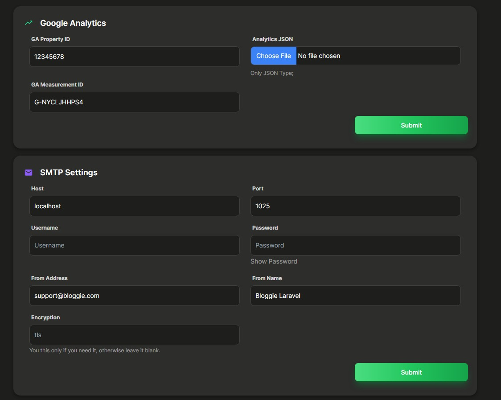

Bloggie CMS Documentation
Author: R Cube Dev
Version: v1.0 ∣∣ Last Updated: R Cube Dev
Keep checking Online Documentation for regular updates: Check Now
Preface
Welcome to the documentation for the Bloggie CMS, this document has been created to provide a comprehensive guide to the functionalities and featured of the Bloggie CMS.
The Bloggie CMS Project is a Content Management System designed to simplify the creation and management of content for websites. The Project is built using TALL Stack (Tailwind, Alpine JS, Laravel, Livewire), and is intended to be used by developers and content creators alike.
This documentation is intended to serve as a reference guide for users of the Bloggie CMS. It includes information on the installation, configuration, and usage of the CMS. It is also designed to help developers extend and customise the project to meet their specific needs.
We hope that this documentation will be a valuable resource for all users of the Bloggie CMS. Do you have any questions or feedback? Please don’t hesitate to reach out to us. Thank you for choosing the Bloggie CMS and we hope that you find this documentation helpful.
1. Getting Started
We would like to thank you for purchasing Bloggie CMS, We are very pleased that you have chosen Bloggie CMS for your Content Management System, you will never be disappointed!
Before you get started, please be sure to Before you get started, please be sure to checkout this documentation we outlined all kinds of required information provided with all the details you need to use Blogger CMS.
If you are unable to find your answer here in our documentation, encourage you to contact us. Currently we provide support only through our email rcubedev20@gmail.com. Don't worry, you will get reply from us more faster than you expected, all you need to do is to mention your problem as clearly as possible, attach some screenshots for your reference.
Thank you, we hope you enjoy using Bloggie CMS.
Package Included
- ● Bloggie CMS Project zip file.
- ● Bloggie CMS Documentation.
2. Deployment to Server
Requirements & PHP Configuration
- ● Minimum PHP Version is 8.0
- Note: Many issues are all related to low PHP configuration limits. The solution is to increase the PHP limits. You can do this on your own or contact your web host and ask them to increase those limits to a minimum as follows;
- ● max_execution_time 300
- ● memory_limit 64M
- ● post_max_size 28M
- ● upload_max_filesize 64M
Local Server
- ● Create a Folder (any name you want), inside 'htdocs' directory if you are using XAMMP or 'WWW' directory if you are using WAMP as development server.
- ● Extract and copy the contents of 'bloggie_cms_prod.zip', into the newly created folder
- ● Open up the '.env' file in your text editor (notepad, notepad++, etc).
- ● Change the 'APP_URL=' value, add to your domain like, http://rcube.test, now save it and Exit.
- ● Head towards 'phpMyAdmin', and create a database, after that go to 'User Privileges' tab and create a User with Password, don't use default user or password like, root@no-password
Live Server
- ● Use File Manager or File Explorer tool, provided in CPanel by your hosting provider.
- ● Locate the root directory, it is the main directory used as entry point for your website. It is typically named public_html, www, htdocs, or similar.
- ● Upload all the contents of 'bloggie_cms_prod.zip', into the 'public_html' directory.
- ● Open the '.env' file, if you can't find .env files, those might be hidden, as dot files are by hidden by default for security reasons. There will be a setting to unhide/show the hidden files, check with your hosting provider.
- ● Change the 'APP_URL=' value, add your domain ex: https://www.rcube.in. If SSL is not configured use http:// save and exit file manager.
- ● Create a Database using phpMyAdmin, provided in CPanel. Take a note of database name, username, and password. Note: For most of the hosting provider host and port are the same, i.e localhost & 3306.
Note: You can also upload files to live server using any of the FTP Client like FileZilla.
3. CMS Installation
Bloggie CMS comes with Installation wizard, which takes care of installing and managing depedencies required for cms. This wizard take you through series of steps to make your CMS up and steady. Open up your browser and go to www.yourdomain.com/install, to begin the installation. Change yourdomain with your domain name.
4. Admin Panel Walkthrough
This section will walkthrough you every feature & sections inside admin panel. After you successfully login you will come up with Admin Dashboard Page.
Dashboard
1. Side Navbar: makes it easy for the end user to navigate through the different sections of the admin panel and find the features they need. It also helps to organize the different sections into logical groups, making it easier for the user to understand how the system is structured.
2. Maintainence Mode: allows website owners to temporarily take their site offline for updates or maintenance. During this time, visitors are typically shown a message explaining that the site is temporarily unavailable and will be back online.
3. Visit Site: open your site in new tab.
4. Open Notifications: Notification pane to show up notifications of your site;
5. Toggle Dark Mode: Bloggie CMS comes with light and dark mode, for both end user and admin too.
6. Breadcrumbs: a navigation aid that displays the user's current location within a application. Displays a trail of links that the user has followed to arrive at their current location.
All Posts
1. Create a Post: button to create a new post.
2. Search for Posts: search among the posts by keywords
3. Filter Posts: various filters to sort the posts table.
4. Toggle Visibility: change visibility of post.
5. Edit or Delete: Edit button to edit and update the post, or Delete button to send the post to trash.
6. Pagination: Number of posts per page.
7. Notifications: A notifier for user.
8. Multi Select: Select mass number of posts to delete at once.
Create Posts
1. Post title: A good post title should be attention-grabbing, concise, and descriptive, giving readers a clear idea of what the content is about.
2. Post Content: A good post content should be clear and precise and encourage readers to continue reading. Text box is powered by CKEditor 5 read more about it in docs, you can also copy image links directly into box to add image.
3. Thumbnails: are an important visual element of many types of content, helping to improve engagement and provide a better user experience.
4. Categories: organizing and grouping similar content on a website or blog. They allow users to easily navigate and find content that is relevant to their interests.
5. Tags: a method of labeling and organizing content on a website or blog. They are typically used to provide additional context or information about the content, and to help users find related content more easily.
6. Featured: content refers to specific pieces of content, such as articles, blog posts, or videos, that are highlighted or promoted on a website or platform.
7. SEO Title: The SEO title is an important element of on-page search engine optimization, as it helps search engines and users understand what the page is about and can influence the page's ranking in search engine results.
8. SEO Description: An SEO description, also known as a meta description or description tag, is a brief summary or snippet of text that describes the content of a web page.
Note: Bloggie CMS, is built by keeping an eye on SEO, by following best practice which will eventually help in ranking higher; To improve your results learn how to write a good meta title, meta description with good keywords. Also, for meta iamge your uploaded thumbnail minified version will be used.
Posts Trash Bin
Reports
The list of posts reported by users, on yout posts. You can review them or delete them.
Categories
Comments
Check Comments, on which post you got comments and by whom. Also, you can approve or disapprove comments.
File Manager
1. Quick Actions: Select All Files & Folders, Upload Files (Max 3 at-a-time), Create a Directory, Archive Files, Download, or Delete Files & Folder.
2. Reload: Reloads the disk of current directory;
3. Files & Folders: Seperated for ease-in-use.
4. Seach Input: Search Files or Directories inside the disk.
5. Drop Down: Take Control of Files & Directories with Rename, Download, Delete, And Share Links (Only For Files).
6. Quick Access: Travel between Folders with Quick Access Panel.
7. Bulk Delete & Download: Hover on Files and Folders, you can see a little checkbox on top-left corner, select files you wish and perform actions.
5. Settings
This section will guide you through the settings of admin panel. To maintain a structure, the settings are divided into App, Appearance, Blog Items, Advanced. All contains respective and important settings.
App Settings
1. Site Name: Name you want to give to your Site
2. Site Description: A short description on what you site is about, it is also used in seo of your site.
3. Site Logos: Obviously you must have prepared some logo for site, that goes here.
4. Site Dark Logo: Fully Optional, if you made a different logo for dark scheme, upload it here.
5. Site Favicon: A small logo shown in tabs. It is recommened to have one.
6. Timezone: Your timezone;
7. Admin Email: Bloggie CMS will report you about updates of your site, or information on Scheduled tasks failure;
8. Footer Text: The text which is appeared on footer of the site.
9. Site Maintainence: Toggle this when you want make changes to site and which may effect readers experience, to redirect them to maintainence page.
Appearance Settings
1. Site Color: This option is only act ascent color which will color your icons and border coloring.
2. Custom CSS & Custom JS: These both options are very advanced, must only be advanced if it is really required.
Note: To be honest with I was planning to create custom Themes for every types of need, where user can upload theme, and activate them. In next update you might be get lots of options for customization.
Blog Items Settings
These settings include some frontend settings, and widgets settings.
1. Default Category: Must select one, when you post something without a category, the default will be assigned to this post, Bloggie CMS provides 'Uncategorized' as default, you can create one select that here.
2. Fetured Post: Option to show or hide this widget in fronted, this sticks to the top the homepage, you can customize no of featured posts to show.
3. Post Description: You might be thinking what is this option about, this is for the 'post description' inside card UI, the text to be shown in frontend blog post cards.
4. Some Widget Options: There are some widget comes with the default theme, Recet Posts, Popular Posts and Related Posts. Change the number of posts to shown in frontend.
5. Pages Related Otions: This option is make pages with sidebar or full width, this option is not currently useful as the default theme uses full-width without sidebar.
Advanced Settings
Google Analytics
This allows website owners to track website traffic and user behavior, which can be useful in optimizing the website's performance and user experience.
Note: How to setup Google Analytics is in different section 'Aditional Configuration', is covered in details.
SMTP Settings
SMTP (Simple Mail Transfer Protocol) is a standard protocol used to send email messages between servers.
You need to configure SMTP in order to run some features, like Auto Backups and Scheduled as it will report you via email on success or failures;
If you dont have SMTP service check some good options;
- Mail Trap
- Mail Gun - My Personal choice, check more in 'Additional Configuration Settings.'
Backup Settings
Backups are the most important of any CMS, Bloggie CMS handles that with care, configure to take complete Application, Database backup within prescribed days, also you have option to auto delete the old backups after some period time.
Sitemap Settings
Sitemap is the crucial part in SEO, for maintaining a good search rank your site should be indexed properly so this where sitemap comes into play. Configure Sitemap to auto update the sitemap everyday, or every 3 days or a week. We recommened to set it to daily.
6. CMS Tools
Bloggie CMS provides a set of pre-equipped tools that make it easier for website owners and developers to manage and maintain their website. Here are some of the tools included out of the box in cms; Backups, Sitemap & Cache Management.
Backups
The backup tool allows website owners to create a backup of their website's database and files. This is useful in case of data loss or website crashes, as the website can be easily restored using the backup files.
1. Application Backup: This includes complete application backup, including media, assets and other internal components; To save space on 'node_modules' & 'vendor' folders are excluded as they contains depedencies and can be installed any time you want.
2. Database Backup: This includes only database.
The table itself shows currently available backups on disk, you can view the file name, module which is basically type, and size of backup. Also you can manually download the backup file from here; or delete them forever.
Note: We recommened you to maintain autobackups of your application, in advanced settings, so you can focus on your writing instead of your data;
Sitemap
A sitemap is a file that contains a list of all the pages on a website. Sitemaps help search engines crawl and index websites more efficiently by providing a clear picture of the website's structure and content. Most content management systems (CMS) come with built-in sitemap generation functionality, and Bloggie CMS is no exception.
The sitemap feature in Bloggie CMS generates a sitemap file that can be submitted to search engines such as Google, Bing, and Yahoo. Here are some of the benefits of using the sitemap feature in Bloggie CMS:
- Improved website indexing: By providing search engines with a complete list of all the pages on your website, the sitemap feature can help ensure that all of your website's pages are indexed by search engines.
- Faster indexing: Sitemaps help search engines discover new pages on your website more quickly, which can help accelerate the indexing process. Whenever you create a Post or New Page, it will add to the respective sitemap.
- Better search engine rankings: By making it easier for search engines to crawl and index your website, the sitemap feature can help improve your website's search engine rankings.
1. Copy the Sitemap URL: As We mentioned one must need to submit the sitemap to Search Engine, check 'Additional Configuration' for more details.
2. Download the Sitemap.
3. Generate or Update your Sitemap.
Cache Management
Cache management is a feature in Bloggie CMS that helps improve website performance by caching frequently accessed data or pages. Caching is the process of storing data in a temporary location (cache) to speed up access to that data in the future. The cache management feature in Bloggie CMS allows you to configure and manage the caching of different types of data on your website.
Here are some of the benefits of using the cache management feature in Bloggie CMS:
- Improved website performance: By caching frequently accessed data or pages, the cache management feature can help reduce the load on your website's server and speed up page load times for website visitors.
- Reduced server load: Caching can help reduce the load on your website's server by serving cached data or pages to website visitors instead of generating that data or page content from scratch every time it is requested.
- Better user experience: Faster page load times can help improve the user experience for website visitors, leading to higher engagement and conversion rates.
- Increased scalability: By reducing the load on your website's server, caching can help improve website scalability and allow your website to handle more traffic without slowing down.
Bloggie CMS's cache management feature allows you to configure and manage different types of caching, such as 'Application Cache', 'Views Cache', 'Routes Cache' & 'Configuration cache'. You can also clear the cache manually or set up automated cache clearing at regular intervals to ensure that your website's cache remains up-to-date.
7. Additional Configuration
In Order to use some features, you need some additional configurations to make it work. This section will guide with those aditional configuration.
Google Analytics
● Head over to Google Developer Console, and select your project if dont have one create a new project.
● Search for analytics api, inside 'Marketplace' tab select Google Analytics Data API.
● Click on Enable
● Click on "creadentials > '+ create creadentials' > Select Service Account.
● Give any name you want. Then click countiue.
● Now, as same screen before under Service Accounts, you will find the new one you created. Copy the Email and store it will be used later, Click on it.
● Navigate to "Keys" tab, and click on "Create new key".
● Select "JSON" file and click create, the file will be downloaded, Keep it.
● Head over to Google Analytics, select a account to use or create a new one. Then Click on Admin in sidebar
● Go to Propery Settings, Copy Property ID: and save it will be used later.
● Go to Propert Access Management, click on + sign and Add Users;
● Now paste the email copied from Service Accounts and select Analyst, click on Add. If you didn't copied open the downloaded JSON file in notepad, copy the Email from it.
● Go to Data Streams, Click on Add Stream, Web.
● Add your Website URL, give it a name, make sure Enhanced measurement is ON. Click Create Stream.
● Now Copy the Measurement ID, and store it.
● Now, update the Property ID, & Measurement ID with your details, Also Upload the JSON file that you downloaded. Then click on Submit.
Sitemap
A sitemap is a file that lists all the pages on a website to help search engines crawl and index the content more efficiently. It can include important metadata about each page, such as its priority, frequency of updates, and last modification date.
Creating a sitemap manually can be a time-consuming and error-prone process, especially for large websites with many pages. Bloggie CMS, have built-in functionality to automatically generate sitemaps for users. Bloggie CMS creates a sitemap for the user by scanning the website's content and organizing it into a structured format that can be easily read by search engines. The sitemap is then automatically updated whenever new content is added or existing content is modified. This process ensures that search engines can quickly discover and index all the pages on the website, which can help improve the website's visibility in search engine results pages (SERPs).
Additionally, having a sitemap can help identify any issues with website structure or organization that may be hindering search engine crawling and indexing. In Bloggie CMS, users can access the automatically generated sitemap by navigating to the "Sitemap" section in the admin panel. From here, they can view the sitemap and make any necessary modifications, such as updating metadata or excluding certain pages from being indexed.
● Login to Admin, in sidebar under CMS Tools, select Sitemap. Click on Generate, to create a sitemap for your site.
● Click the blue copy button, to copy the Sitemap URL to clipboard.
● Head over to Google Search Console, login with google Account. In your console, on left side click on select property, then create a new property.
● Add you site in the Domain, ex: "rcubedev.in", then click continue.
● It will ask you to verify domain ownership, it is simple as Google provides simple Instructions, It requires to edit some DNS Records.
● Paste your Sitemap url here, Note: your domain is already added, so simply route to sitemap; i.e if the copied url is "http://www.rcubedev.in/public/sitemap.xml" then add only "public/sitemap.xml". Now it will start indexing, all data will be available after some time. So use this data, to improve your posts, understand about your audience.